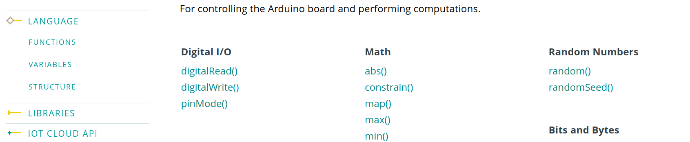
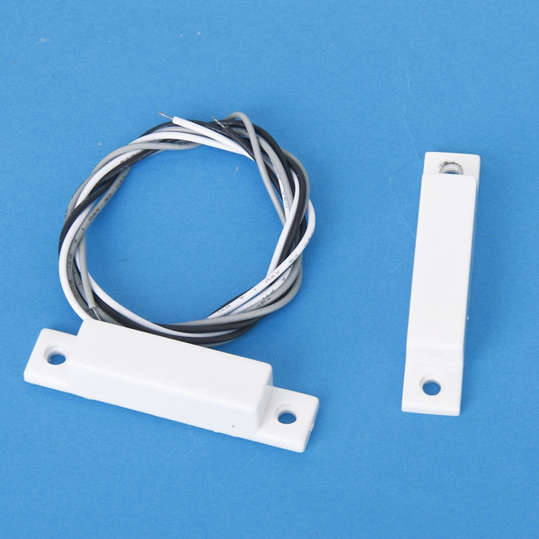

Arduino
- Arduino
- Lezione 01
- Lezione 02
- Alimentare arduino
- Lezione 03
- Pin I/O
- Lezione 04
- Sketch
- Primo sketch - LED Blink
- Lezione 05
- PWM
- Lezione 06
- Documentazione Linguaggio Arduino
- Binary Clock
- RTC e display 7 segmenti
- EEPROM
- SLEEP MODE
- Contatto magnetico
- RTC e Display I2C
Lezione 01
Arduino è una scheda elettronica per realizzare prototipi. Il cuore di arduino è il microcontrollore. Il modello Arduino UNO R3 utilizza il microcontrollore Atmega328P.

Un microcontrollore (in inglese microcontroller in acronimo MCU ovvero MicroController Unit), in elettronica digitale, è un dispositivo elettronico integrato su singolo circuito elettronico, nato come evoluzione alternativa al microprocessore e utilizzato generalmente in sistemi embedded ovvero per applicazioni specifiche di controllo digitale.

La scehda di Arduino, attraverso il microcontrollore, comunica con il mondo esterno attraverso i suoi PIN. Un microcontrollore in genere svolge un compito molto specifico come leggere il valore di certi sensori collegati in ingresso o settare le uscite collegate a qualche attuatore. Ci sono molti componenti elettronici interfacciabili direttamente con Arduino

Lezione 02
Alimentare arduino
Puoi alimentare Arduino con il connettore DC con una tensione nel range 6-20V

Puoi inoltre utilizzare il cavo usb collegato a PC o un a un caricatore per smartphone. Il cavo USB è inoltre indispensabile per il caricamento del programma da PC alla memoria interna del microcontrollore

Puoi alimentare Arduino manualmente attraverso il pin Vin con una tensione esatta di 5V.

Una volta alimentato Arduino puoi prelevare le tensioni di 5v, 3.3v e il riferimento GND dagli omonimi pin.
Esiste inoltre un tasto RESET che consente il riavvio di Arduino.
E' possibile inoltre riavviare Arduino attraverso il pin RESET con un apposito segnale di reset.
Lezione 03
Pin I/O
Pin Digitali
Ci sono 14 PIN digitali numerati da 0 - 13 per l'interfacciamento digitale con il mondo esterno. Possono essere utili per collegare LED, tasti, display LCD, matrici di LED e molto altro. In generale è possibile collegare ogni dispositivo digitale ovvero componenti che ricevono o trasmettono solo due possibili valori di tensione 5V, 0V. Alucuni pin sono marcati con una ~. Sono dedicati al modulo PWM che studieremo più avanti.
Pin Analogici
Ci sono inoltre 5 PIN numerati da 14 - 19 per l'interfacciamento con segnali analogici in ingresso come sensori di temperatura, microfoni o in generale qualsiasi segnale elettrico che varia in modo continuo nel range [0v - 5v].

Lezione 04
Sketch
Lo Sketch è il programma, la logica. Arduino utilizza come linguaggio di programmazione il C++ ma fornisce anche delle funzioni di interfacciamento o meglio delle classi e dei metodi per l'accesso in modo semplificato all'Hardware. Per far ciò, all'accensione del microcontrollore, Arduino configura i registri interni dei moduli del microcontrollore con un settaggio standard e "maschera" queste operazioni all'utente finale mostrando solo due macroblocchi:
- setup
- loop

In linea generale possiamo affermare che:
- setup: i comandi scritti all'interno di questo blocco vengono eseguiti una sola volta all'avvio di Arduino.
- loop i comandi scritti all'interno di questo blocco vengono eseguiti ciclicamente dopo l'avvio di Arduino fino al riavvio o spegnimento della board.
Driver necessari
Normalmente, installando l'IDE Arduino ti troverai installati anche tutti i driver necessari per comunicare con la scheda. Se acquisti un Arduino clone tuttavia potresti aver bisogno dei driver (per Windows) poichè spesso i componenti hardware non sono proprio gli stessi. Da questa pagina è possibile scaricare i driver necessari. Trovi un file eseguibile anche all'interno di questa repository al percorso files/CH341SER.EXE
Primo sketch - LED Blink
Come primo Sketch vedremo come far lampeggiare un LED. Useremo il LED connesso direttamente ad arduino al pin 13. Per far ciò dovremo:
in void setup {}:
- Impostare il pin 13 come output
in void loop(){}:
- Scrivere il valore logico HIGH sul pin 13 per fornire 5v ed accendere il led tramite l'istruzione digitalWrite()
- Inserire un ritardo che esprime il tempo in cui il pin starà acceso con l'istruzione delay()
- Scrivere il valore logico LOW sul pin 13 per togliere l'alimentazione e spegnere il led tramite l'istruzione digitalWrite()
- Inserire un ritardo che esprime il tempo in cui il pin starà spento con l'istruzione delay()
Poichè il void loop(){} esegue in loop le istruzioni, realizzerai un lampeggio del LED infinito.
Il codice completo:
void setup() {
// initialize digital pin LED_BUILTIN as an output.
pinMode(13, OUTPUT);
}
// the loop function runs over and over again forever
void loop() {
digitalWrite(13, HIGH); // turn the LED on (HIGH is the voltage level)
delay(1000); // wait for a second
digitalWrite(13, LOW); // turn the LED off by making the voltage LOW
delay(1000); // wait for a second
}
Adesso è sufficiente:
- Premere il tasto Verifica che controllerà la sintassi e ti avviserà se hai inserito qualche comando non valido nella finestra nera in basso
- Premere il tasto Esegui che andrà a inserire il codice all'interno della memoria di Arduino e a procedere con l'esecuzione dello sketch
E' possibile trovare questo sketch esempio su File/Esempi/01.Basics/Blink
Apparirà come:
/*
Blink
Turns an LED on for one second, then off for one second, repeatedly.
Most Arduinos have an on-board LED you can control. On the UNO, MEGA and ZERO
it is attached to digital pin 13, on MKR1000 on pin 6. LED_BUILTIN is set to
the correct LED pin independent of which board is used.
If you want to know what pin the on-board LED is connected to on your Arduino
model, check the Technical Specs of your board at:
https://www.arduino.cc/en/Main/Products
modified 8 May 2014
by Scott Fitzgerald
modified 2 Sep 2016
by Arturo Guadalupi
modified 8 Sep 2016
by Colby Newman
This example code is in the public domain.
http://www.arduino.cc/en/Tutorial/Blink
*/
// the setup function runs once when you press reset or power the board
void setup() {
// initialize digital pin LED_BUILTIN as an output.
pinMode(LED_BUILTIN, OUTPUT);
}
// the loop function runs over and over again forever
void loop() {
digitalWrite(LED_BUILTIN, HIGH); // turn the LED on (HIGH is the voltage level)
delay(1000); // wait for a second
digitalWrite(LED_BUILTIN, LOW); // turn the LED off by making the voltage LOW
delay(1000); // wait for a second
}
L'unica differenza che trovi è LED_BUILTIN. E' una costante il cui valore è pari a 13.
Il valore di tutte le costanti di Arduino le puoi trovare sulla documentazione ufficiale: Arduino - constants
Lezione 05
PWM
In elettronica e telecomunicazioni la modulazione di larghezza di impulso (o PWM, acronimo del corrispettivo inglese pulse-width modulation) è un tipo di modulazione digitale che permette di ottenere una tensione media variabile dipendente dal rapporto tra la durata dell'impulso positivo e dell'intero periodo (duty cycle). Allo stesso modo, è fondamentalmente utilizzato per protocolli di comunicazione in cui l'informazione è codificata sotto forma di durata nel tempo di ciascun impulso. Grazie ai moderni microcontrollori, è possibile attivare o disattivare un interruttore ad alta frequenza e allo stesso modo rilevare lo stato e il periodo di un impulso.

Poichè arduino è alimentato a 5V se volessi ottenere un valore medio pari a 2.5V in uscita da un pin digitale dovrei generare un segnale PWM con le seguenti caratteristiche:
- Frequenza: fissa. Valori standard di frequenza per i segnali PWM vanno da qualche centinaia di
Hza qualcheKhz. Il valore di frequenza è stabilito internamente da Arduino quindi per adesso non dovrai preoccupartene. - Duty cicle:
50%. Per impostare il duty cicle si imposta un valore nel range0-255all'interno della funzioneanalogWrite(). Attraverso la proporzione:Poichè vogliamodutyCicle% : 100% = value: 255dutyCicle% = 50%, alloravalue = 127
Nel prossimo esempio genererò un segnale PWM con duty cicle = 50% per controllare la luminosità di un LED.
Per far ciò è necessario:
- collegare un LED a un PIN qualsiasi con uscita PWM. Sono quelli identificati dal simbolo ~. Utilizzerò il pin 9
- chiamare il comando analogWrite() specificando come primo parametro il pin sul quale si desidera generare il segnale PWM, quindi il pin 9 e come secondo parametro il duty cicle espresso con un numero da [0 - 255]. Per ottenere un duty cicle del 50% scriverò 127
Lo sketch completo è:
void setup() {
}
void loop() {
analogWrite(9, 127);
}
Arduino fornisce un esepio più compelto all'interno della cartella degli esempi File/Esempi/01.Basics/Fade
/*
Fade
This example shows how to fade an LED on pin 9 using the analogWrite()
function.
The analogWrite() function uses PWM, so if you want to change the pin you're
using, be sure to use another PWM capable pin. On most Arduino, the PWM pins
are identified with a "~" sign, like ~3, ~5, ~6, ~9, ~10 and ~11.
This example code is in the public domain.
http://www.arduino.cc/en/Tutorial/Fade
*/
int led = 9; // the PWM pin the LED is attached to
int brightness = 0; // how bright the LED is
int fadeAmount = 5; // how many points to fade the LED by
// the setup routine runs once when you press reset:
void setup() {
// declare pin 9 to be an output:
pinMode(led, OUTPUT);
}
// the loop routine runs over and over again forever:
void loop() {
// set the brightness of pin 9:
analogWrite(led, brightness);
// change the brightness for next time through the loop:
brightness = brightness + fadeAmount;
// reverse the direction of the fading at the ends of the fade:
if (brightness <= 0 || brightness >= 255) {
fadeAmount = -fadeAmount;
}
// wait for 30 milliseconds to see the dimming effect
delay(30);
}
9 si accenderà e si spegnerà in modo graduale. Per ottenere questo effetto si agisce su parametro che regola il duty cicle che in questo programma è definito dalla variabile brightness.
-
In pratica il software imposta una
brightnesspari a0aumenta la variabilebrightnessdel valore pari afadeAmount(impostata a5) secondo l'espressionebrightness = brightness + fadeAmountche diventa quindibrightness = brightness + 5 -
Ripete questa operazione ogni
30 millisecondi.
In questo modo il LED aumenterà la sua luminosità in modo graduale
-
Una volta che
brightnessè arrivata al valore massimo,brightness >= 255, inverte il valore difadeAmount. In questo caso quindi l'espressione diventabrightness = brightness - 5. -
Ripete questa operazione ogni
30 millisecondi.
Il risultato è che il LED diminuirà la sua luminosità in modo graduale.
- Una volta che
brightnessè arrivata al valore minimo,brightness <= 0, inverte il valore difadeAmount. In questo caso quindi l'espressione torna a esserebrightness = brightness + 5. - Ripete questa operazione ogni
30 millisecondi.
E continua fino al reset di Arduino.
Domanda:
Quanto impiega il ciclo di accensione?
vista l'espressione brightness = brightness + fadeAmount e visto il ritardo pari a 30ms, si ha che brightness passa da 0 255 in 51 step ( 255/5 ) e quindi il ciclo di accensione graduale dura 30ms*51 = 1.53 secondi. Poichè il ciclo di spegnimento è simmetrico, se ne deduce che il ciclo completo (accensione + spegnimento) dura poco più di 3 secondi
Puoi provare:
Puoi provare a cambiare il ritardo di 30ms o il fadeAmount per cambiare la velocità di accensione/spegnimento.
Puoi anche impostare un valore minimo di brightness e un valore massimo
Ecco un esempio:
/*
Fade
This example shows how to fade an LED on pin 9 using the analogWrite()
function.
The analogWrite() function uses PWM, so if you want to change the pin you're
using, be sure to use another PWM capable pin. On most Arduino, the PWM pins
are identified with a "~" sign, like ~3, ~5, ~6, ~9, ~10 and ~11.
This example code is in the public domain.
http://www.arduino.cc/en/Tutorial/Fade
*/
int led = 9; // the PWM pin the LED is attached to
int brightness = 0; // how bright the LED is
int fadeAmount = 2; // how many points to fade the LED by
byte maxBrightness = 200;
byte minBrightness = 10;
// the setup routine runs once when you press reset:
void setup() {
// declare pin 9 to be an output:
pinMode(led, OUTPUT);
}
// the loop routine runs over and over again forever:
void loop() {
// set the brightness of pin 9:
analogWrite(led, brightness);
// change the brightness for next time through the loop:
brightness = brightness + fadeAmount;
// reverse the direction of the fading at the ends of the fade:
if (brightness <= minBrightness || brightness >= maxBrightness) {
fadeAmount = -fadeAmount;
}
// wait for 3 milliseconds to see the dimming effect
delay(1);
}
Piccolo Approfondimento - Frequenza PWM
Come già detto, Arduino imposta un valore di frequenza per il segnale PWM ma quale?
Per Arduino UNO il valore è 490.20 Hz per i pin D3,D9, D10, D11 e il valore 976.56 Hz per i pin D5 & D6.
Cosa cambia al variare della frequenza?
Provo a darti una spiegazione molto qualitativa..
IL PWM agisce sul'inerzia elettromeccanica dei componenti. Puoi intuire che abbassando la frequenza il componente possa diventare meno fluido. Se si parla di un LED, a una frequenza molto bassa vedrai lampeggiare il LED.
Allo stesso tempo puoi intuire che alzando troppo la frequenza sia difficile per il componente leggere valori di duty cicle troppo piccoli. Nel caso del LED, lo vedrai sempre spento.
Per determinare i valori minimi e massimi di frequenza PWM è necessario eseguire un'analisi dei componenti capacitivi/indutti parassiti e studiare la caratteristica al variare della frequenza. Per adesso comunque ti basta sapere che in linea generale, le frequenze possono andare nei casi più comuni tra [100Hz - 100Khz]. Avrai frequenze piuttosto basse se il componente ha una capacità di reazione lenta e frequenze più alte per componenti che hanno una capacità di reazione alta
Lezione 06
Documentazione Linguaggio Arduino
Arduino utilizza il linguaggio C++ ma esporta una serie di funzioni molto semplici per il controllo dell'Hardware.
Qui puoi trovare la documentazione ufficiale del linguaggio di Arduino.

Qua sotto riporto comunque qualche costrutto fondamentale del linguaggio C++ e qualche funzione esportata da Arduino.
Le variabili
| Tipo di Dato | Dimensione | Descrizione |
|---|---|---|
| char | 1 Byte | Contenitore per caratteri e valori alfanumerici (e.g., ‘a’, ‘b’, ‘1’, etc) |
| bool | 1 Byte | Contenitore per valori booleani (e.g., true, false) |
| int | 2 Byte | Contenitore per numeri interi nel range numerico, da -32768 a 32767. |
| unsigned int | 2 Byte | Contenitore per numeri interi senza segno nel range numerico, da 0 a 65535. |
| long | 4 Byte | Contenitore per numeri interi nel range numerico, da -2147483648 a 2147483647 |
| unsigned long | 4 Byte | Contenitore per numeri interi nel range numerico, da 0 to 4,294,967,295 (2^32 – 1) |
| float | 4 Byte | Contenitore per numeri interi nel range numerico, da 0 to 4,294,967,295 (2^32 – 1) |
| double | 4 Byte | Contenitore per numeri interi nel range numerico, da 0 to 4,294,967,295 (2^32 – 1) |
| String | - | Contenitore per testo (e.g., “Resistenza”) |
Binary Clock
Per questo orologio binario ho utilizzato la libreria simple_matrix per la gestione della matrice di LED e la libreria RTClib per la gestione del tempo.
Ho modificato la libreria simple_matrix creando una nuova versione, simple_matrix_v2 che in più contiene i metodi:
writeSquare(order, x, y, value)writePixel(x, y, value)
Collegamenti Hardware
| LED Matrix Pins | Arduino Pins |
|---|---|
| VCC | VCC |
| GND | GND |
| DIN | D11 |
| CLK | D13 |
| CS | D4 |
| RTC | Arduino Pins |
|---|---|
| VCC | VCC (+5V) |
| GND | GND |
| SDA | A4 (SDA) |
| SCL | A5 (SCL) |

Il codice
L'orologio binario consiste nel codificare ore, minuti e secondi con la relativa sequenza binaria.
Ho deciso di codificare ogni cifra in una sequenza binaria rappresentando quindi separatamente decine e unità per ore, minuti e secondi.
Ad esempio:
12
//decine //unità
0001 0010
Inoltre la rappresentazione del tempo all'interno della matrice di LED va dall'alto verso il basso a partire dalle ore.
In conclusione, per rappresentare la seguente ora: 21:34:46 vedrai:
21:34:46
//d //u
0010 0001
0011 0100
0100 0110
Ecco quindi il codice completo..
#include "simple_matrix_v2.h" //Import the library
#include "RTClib.h"
#define NUMBER_OF_DISPLAYS 2 //Sets the number of display (4 for this example)
/*
Initialize the library. The 4 means that the CS pin is connected to pin D4.
You can change this to whatever you want, just make sure to connect the CS
pin to the pin number.
The disp means that any future function calls to the library uses "disp" as the
library's object name. For example, the library has a function called
"setIntensity", you need to write "disp.setIntensity" to call that function.
If you notice that the display is upside-down per display, change
simpleMatrix disp(4, false, NUMBER_OF_DISPLAYS); to simpleMatrix disp(4, true, NUMBER_OF_DISPLAYS);
*/
/*
WARNING!!
There are several problems with the coding of (x, y) coordinates. I advise you to change the library for the LED matrix and switch to MD_MAX72XX which is much more complete and configurable.
*/
simpleMatrix disp(4, true, NUMBER_OF_DISPLAYS);
RTC_DS1307 rtc;
#define ORDER 2
#define START_X 0
#define START_Y 8
#define ADJUST_HOUR true
int seconds = 0;
int minutes = 0;
int hours = 0;
void seconds_unit(int i){
//If you don't understand, see WARNINGS
int x = 0;
int y = 0;
int value = 0;
for (int bitNumber = 0; bitNumber < 4; bitNumber++){
x = START_Y - 1*ORDER;
y = START_X + bitNumber*ORDER;
value = (i>>bitNumber)&1;
disp.writeSquare(ORDER, x, y, value);
}
}
void seconds_dozens(int i){
//If you don't understand, see WARNINGS
int x = 0;
int y = 0;
int value = 0;
for (int bitNumber = 0; bitNumber < 4; bitNumber++){
x = START_Y - 1*ORDER;
y = START_X + 8 + bitNumber*ORDER;
value = (i>>bitNumber)&1;
disp.writeSquare(ORDER, x, y, value);
}
}
void minutes_unit(int i){
//If you don't understand, see WARNINGS
int x = 0;
int y = 0;
int value = 0;
for (int bitNumber = 0; bitNumber < 4; bitNumber++){
x = START_Y - 2*ORDER -1;
y = START_X + bitNumber*ORDER;
value = (i>>bitNumber)&1;
disp.writeSquare(ORDER, x, y, value);
}
}
void minutes_dozens(int i){
//If you don't understand, see WARNINGS
int x = 0;
int y = 0;
int value = 0;
for (int bitNumber = 0; bitNumber < 4; bitNumber++){
x = START_Y - 2*ORDER -1;
y = START_X + 8 + bitNumber*ORDER;
value = (i>>bitNumber)&1;
disp.writeSquare(ORDER, x, y, value);
}
}
void hours_unit(int i){
//If you don't understand, see WARNINGS
int x = 0;
int y = 0;
int value = 0;
for (int bitNumber = 0; bitNumber < 4; bitNumber++){
x = START_Y - 3*ORDER -2;
y = START_X + bitNumber*ORDER;
value = (i>>bitNumber)&1;
disp.writeSquare(ORDER, x, y, value);
}
}
void hours_dozens(int i){
//If you don't understand, see WARNINGS
int x = 0;
int y = 0;
int value = 0;
for (int bitNumber = 0; bitNumber < 4; bitNumber++){
x = START_Y - 3*ORDER -2;
y = START_X + 8 + bitNumber*ORDER;
value = (i>>bitNumber)&1;
disp.writeSquare(ORDER, x, y, value);
}
}
//This code will run only once when the Arduino is turned on.
void setup(){
rtc.begin();
//Starts the library
disp.begin();
//Set the LED's intensity. This value can be anywhere between 0 and 15.
disp.setIntensity(0x01);
if(ADJUST_HOUR){
rtc.adjust(DateTime(F(__DATE__), F(__TIME__)));
}
}
//After void setup(), this code will run and loop forever.
void loop(){
DateTime adesso = rtc.now();
seconds = adesso.second();
minutes = adesso.minute();
hours = adesso.hour();
seconds_unit(seconds%10);
seconds_dozens(seconds/10);
minutes_unit(minutes%10);
minutes_dozens(minutes/10);
hours_unit(hours%10);
hours_dozens(hours/10);
delay(1000);
}
RTC e display 7 segmenti
| 7 SEG Pins | Arduino Pins |
|---|---|
| VCC | VCC |
| GND | GND |
| DIN | D11 |
| CLK | D13 |
| CS | D10 |
//We always have to include the library
#include "LedControl.h"
/*
Now we need a LedControl to work with.
***** These pin numbers will probably not work with your hardware *****
pin 12 is connected to the DataIn
pin 11 is connected to the CLK
pin 10 is connected to LOAD
We have only a single MAX72XX.
*/
LedControl lc=LedControl(12,11,10,1);
/* we always wait a bit between updates of the display */
unsigned long delaytime=500;
void setup() {
/* The MAX72XX is in power-saving mode on startup, we have to do a wakeup call */
lc.shutdown(0,false);
/* Set the brightness to a medium values */
lc.setIntensity(0,8);
/* and clear the display */
lc.clearDisplay(0);
}
int ore = 22;
int minuti = 30;
int secondi = 0;
int centesimi = 0;
void loop() {
lc.setDigit(0,7,ore/10,false);
lc.setDigit(0,6,ore%10,true);
lc.setDigit(0,5,minuti/10,false);
lc.setDigit(0,4,minuti%10,true);
lc.setDigit(0,3,secondi/10,false);
lc.setDigit(0,2,secondi%10,true);
lc.setDigit(0,1,centesimi/10,false);
lc.setDigit(0,0,centesimi%10,false);
delay(10);
centesimi++;
if (centesimi == 100){
centesimi = 0;
secondi++;
}
if (secondi == 60){
minuti++;
secondi = 0;
}
if (minuti == 60){
ore++;
minuti = 0;
}
if (ore == 24){
ore = 0;
}
}
EEPROM
#include <EEPROM.h>
int nByte = 0;
int value = 50;
void setup()
{
Serial.begin(9600);
if(EEPROM.read(nByte) == 255){
Serial.println(String(String(nByte) + "vuoto"));
EEPROM.write(nByte, value);
}
else{
int tempvalue = EEPROM.read(nByte);
String toprint = String(String(nByte) + ":" + String(tempvalue));
Serial.println(toprint);
}
}
void loop()
{
}
SLEEP MODE
/**
* Author:Ab Kurk
* version: 1.0
* date: 24/01/2018
* Description:
* This sketch is part of the beginners guide to putting your Arduino to sleep
* tutorial. It is to demonstrate how to put your arduino into deep sleep and
* how to wake it up.
* Link To Tutorial http://www.thearduinomakerman.info/blog/2018/1/24/guide-to-arduino-sleep-mode
*/
#include <avr/sleep.h>//this AVR library contains the methods that controls the sleep modes
#define interruptPin 2 //Pin we are going to use to wake up the Arduino
void setup() {
Serial.begin(9600);//Start Serial Comunication
pinMode(LED_BUILTIN,OUTPUT);//We use the led on pin 13 to indecate when Arduino is A sleep
pinMode(interruptPin,INPUT);//Set pin d2 to input using the buildin pullup resistor
attachInterrupt(digitalPinToInterrupt(interruptPin), wakeUp, RISING);//attaching a interrupt to pin d2
digitalWrite(LED_BUILTIN,HIGH);//turning LED on
}
void loop() {
delay(5000);//wait 5 seconds before going to sleep
digitalWrite(LED_BUILTIN,LOW);//turning LED off
Going_To_Sleep();
}
void Going_To_Sleep(){
sleep_enable();//Enabling sleep mode
set_sleep_mode(SLEEP_MODE_PWR_DOWN);//Setting the sleep mode, in our case full sleep
sleep_cpu();//activating sleep mode
}
void wakeUp(){
Serial.println("Interrrupt Fired");//Print message to serial monitor
sleep_disable();//Disable sleep mode
Serial.println("just woke up!");//next line of code executed after the interrupt
digitalWrite(LED_BUILTIN,HIGH);//turning LED on
}
Contatto magnetico

void setup() {
pinMode(2, INPUT_PULLUP);
pinMode(LED_BUILTIN, OUTPUT);
Serial.begin(9600);
}
void loop() {
bool v = digitalRead(2);
digitalWrite(LED_BUILTIN, !v);
delay(100);
}
RTC e Display I2C
In questo esempio vedremo come realizzare un orologio utilizzando il modulo RTC, un display LCD con interfaccia I2C e un tasto touch. L'orologio sarà alimentato da una pila a 9V quindi, per evitare che si scarichi nel giro di poche ore, faremo in modo che arduino vada in sleep mode disabilitando tutte le periferiche ad esso connesso. Il tasto touch servià a risvegliare la arduino, il display e il modulo RTC per 10 secondi.

| RTC | Arduino Pins |
|---|---|
| VCC | VCC (+5V) |
| GND | GND |
| SDA | A4 (SDA) |
| SCL | A5 (SCL) |
| LCD | Arduino Pins |
|---|---|
| VCC | VCC (+5V) |
| GND | GND |
| SDA | A4 (SDA) |
| SCL | A5 (SCL) |
#include <Wire.h>
#include <avr/sleep.h>
#include <LiquidCrystal_I2C.h>
#include "RTClib.h"
#define WAKEUP_PIN 2
#define RTC_LDC_PIN_POWER_SUPPLY 7
#define timeBeforeWakeUp 10000
#define refreshTime 1000
#define ON true
#define OFF false
enum Mesi {Jan = 1, Feb, Mar, Apr, May, Jun, Jul, Aug, Sept, Oct, Nov, Dec};
enum Giorni {Sunday = 0, Monday, Tuesday, Wednesay, Thursday, Friday, Saturday};
//You shall flash the sketch two time.
//The first for adjust the time
//The second for run arduino stand alone
#define ADJUST_HOUR false
DateTime dateNow = DateTime(2021, May, 19, 19, 9, 10);
LiquidCrystal_I2C lcd(0x27,20,2); // set the LCD address to 0x27 for a 16 chars and 2 line display
RTC_DS1307 rtc;
//add 0 if number is < 9 and return a string
String fillZeros(int n) {return (n < 10 ? String('0' + String(n)) : String(n)); }
//receive h, m, s and return hh:mm:ss
String standardTime(int h, int m, int s){ return (String(fillZeros(h) + ':' + fillZeros(m) + ':' + fillZeros(s))); }
void setup()
{
pinMode(RTC_LDC_PIN_POWER_SUPPLY, OUTPUT);
pinMode(WAKEUP_PIN,INPUT_PULLUP);
attachInterrupt(digitalPinToInterrupt(WAKEUP_PIN), mcuWakeUp, FALLING); //attaching a interrupt to pin
rtc_lcd_PowSupply(ON);
if(ADJUST_HOUR){
//to set time at the compilation time
//rtc.adjust(DateTime(F(__DATE__), F(__TIME__)));
rtc.adjust(dateNow);
}
}
void loop()
{
DateTime now = rtc.now();
int year = now.year();
int month = now.month();
int day = now.day();
int dayOfTheWeek = now.dayOfTheWeek();
int seconds = now.second();
int minutes = now.minute();
int hours = now.hour();
String LCD_firstRow = "";
switch(dayOfTheWeek){
case Sunday: LCD_firstRow = LCD_firstRow + "Dom" + " "; break;
case Monday: LCD_firstRow = LCD_firstRow + "Lun" + " "; break;
case Tuesday: LCD_firstRow = LCD_firstRow + "Mar" + " "; break;
case Wednesay: LCD_firstRow = LCD_firstRow + "Mer" + " "; break;
case Thursday: LCD_firstRow = LCD_firstRow + "Gio" + " "; break;
case Friday: LCD_firstRow = LCD_firstRow + "Ven" + " "; break;
case Saturday: LCD_firstRow = LCD_firstRow + "Sab" + " "; break;
break;
default:;
}
LCD_firstRow = LCD_firstRow + String(day) + " ";
switch(month){
case Jan: LCD_firstRow = LCD_firstRow + "gen" + " "; break;
case Feb: LCD_firstRow = LCD_firstRow + "gen" + " "; break;
case Mar: LCD_firstRow = LCD_firstRow + "mar" + " "; break;
case Apr: LCD_firstRow = LCD_firstRow + "apr" + " "; break;
case May: LCD_firstRow = LCD_firstRow + "mag" + " "; break;
case Jun: LCD_firstRow = LCD_firstRow + "giu" + " "; break;
case Jul: LCD_firstRow = LCD_firstRow + "lug" + " "; break;
case Aug: LCD_firstRow = LCD_firstRow + "ago" + " "; break;
case Sept: LCD_firstRow = LCD_firstRow + "set" + " "; break;
case Oct: LCD_firstRow = LCD_firstRow + "ott" + " "; break;
case Nov: LCD_firstRow = LCD_firstRow + "nov" + " "; break;
case Dec: LCD_firstRow = LCD_firstRow + "dic" + " "; break;
break;
default:;
}
LCD_firstRow = LCD_firstRow + String(year);
lcd.setCursor(0,0);
lcd.print(LCD_firstRow);
lcd.setCursor(0,1);
lcd.print(standardTime(hours, minutes, seconds));
delay(refreshTime);
static int counter = 0;
if(counter < timeBeforeWakeUp){
counter += refreshTime;
}
//go to sleep
else {
counter = 0;
rtc_lcd_PowSupply(OFF);
mcuGoToSleep();
//after wake up
rtc_lcd_PowSupply(ON);
}
}
void rtc_lcd_PowSupply(bool isOn){
if(isOn){
digitalWrite(RTC_LDC_PIN_POWER_SUPPLY, HIGH);
lcd.init();
lcd.backlight();
lcd.setCursor(0,0);
delay(100);
rtc.begin();
}
else{
digitalWrite(RTC_LDC_PIN_POWER_SUPPLY, LOW);
}
}
void mcuGoToSleep(){
sleep_enable();
set_sleep_mode(SLEEP_MODE_PWR_DOWN);
sleep_cpu();
}
void mcuWakeUp(){
sleep_disable();//Disable sleep mode
}